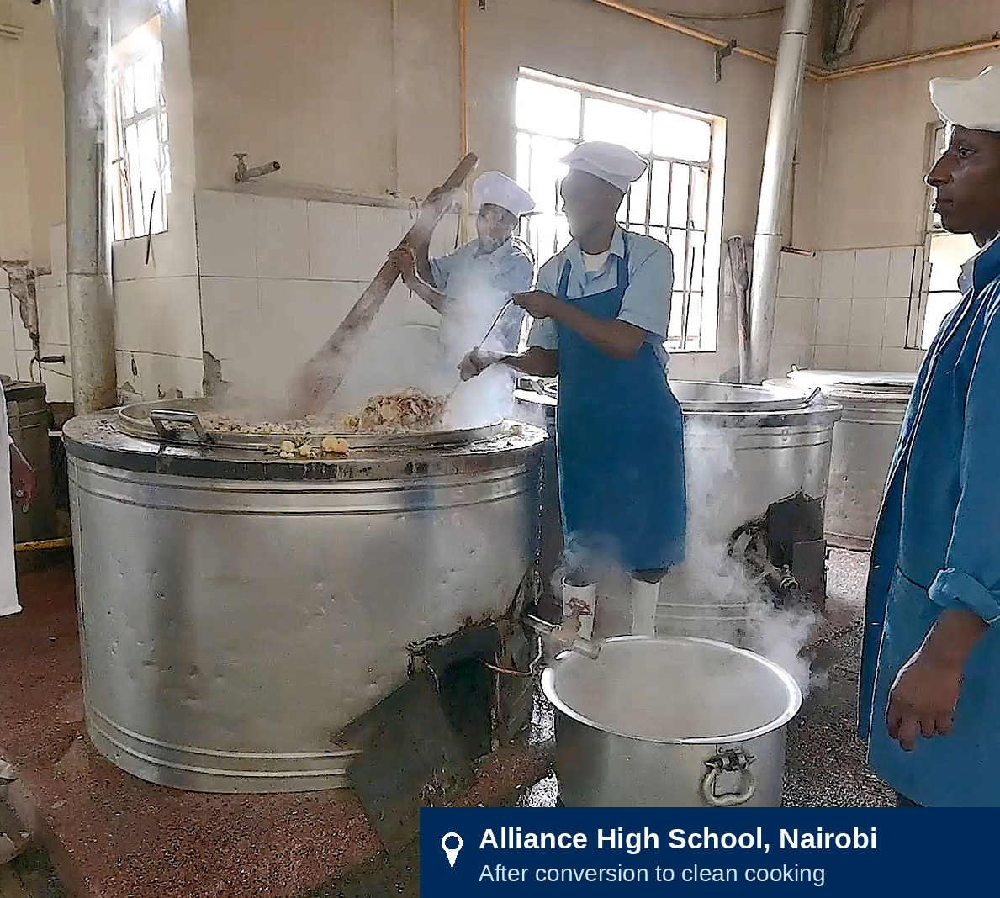
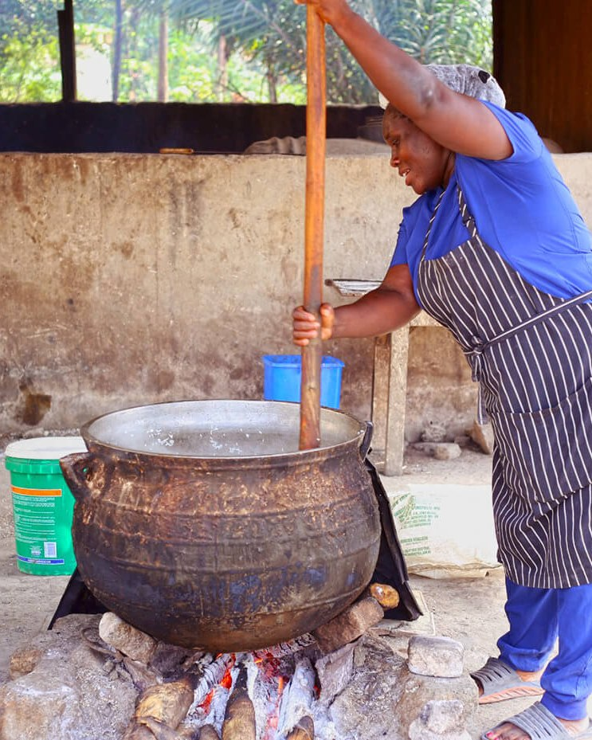
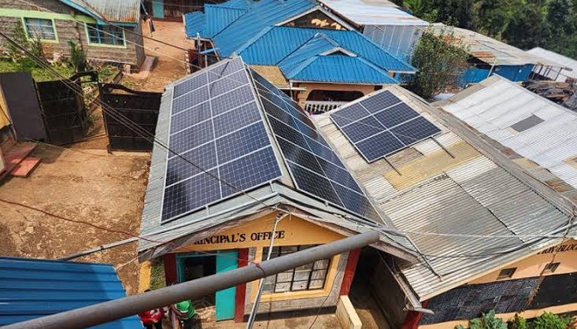

Annex – Detailed Partner Roles 18
Every day, thousands of Kenyan boarding schools relied on firewood to prepare meals — collectively consuming more than 10 million trees and spending an estimated KES 6 billion (USD 46 million) each year, degrading forests and water catchments and exposing students and kitchen staff to harmful indoor air pollution. Cleaner alternatives were available and proven, yet adoption remained marginal.
Source: Primary Research Interview – Kenya Commercial Bank – April 2026 |  |
In response, Kenya Commercial Bank (KCB) launched the Clean Cooking and Clean Energy Transition Program for Learning Institutions — a national initiative to move schools from biomass to cleaner, more sustainable cooking systems. This case illustrates the Project Preparation & Guarantee Platform model from the ‘Advancing Partnerships Between Private Sector and Development Actors in Africa’ Playbook, demonstrating how project preparation, stakeholder coordination, risk mitigation, and blended finance can transform a visible development opportunity into an investable and scalable program.
Following a pilot that grew from 47 to 266 schools, the Ministry of Education approved national scale-up — making this one of the largest institutional clean cooking transitions currently underway in Africa.
THE OPPORTUNITY AT SCALE | 10M+ Trees consumed every year | KES 6 BN Spent on firewood every year | 3,213 Boarding schools across 47 counties |
THE CASE AT A GLANCE
Program | KCB Clean Cooking and Clean Energy Transition Program for Learning Institutions |
Playbook model | Model 2 — Integrated Project Preparation and Guarantee Platform |
Timeline | Designed 2024 · Piloted 2025 (47 → 266 schools) · National scale-up from 2026 |
Scale | 3,213 boarding schools across all 47 counties |
Financing | USD 96.9M GCF facility · USD 150M AfDB facility · IFC and BII co-financing |
Lending terms | ≈ 9.75% program rate, against ≈ 17.65% commercial benchmark |
Led by | KCB, with the Ministry of Education, National Treasury, GCF, AfDB, IFC, BII, and the Cambridge–Liverpool–KEMRI research consortium |
For decades, cooking in Kenya’s boarding schools relied almost exclusively on firewood, supported by a well-established supply chain of fuelwood producers, traders, and transporters. Schools procured and stored large quantities of wood on-site to prepare meals for hundreds of thousands of students every day. This expenditure was deeply embedded in school operations. Energy was treated as a recurring operating cost, financed through annual budgets alongside food, staff, and facility maintenance, so spending flowed to fuel consumption rather than long-term energy infrastructure. Proven alternatives — electric cooking, LPG, biogas, steam, and solar systems — were already available in the market, yet adoption remained marginal across the sector. |  Photo: Bettering Human Lives Foundation — school cooking on firewood. |
Firewood dependence across Kenya’s boarding schools | |||||
10M+ trees consumed by boarding schools every year | ≈1M tons of firewood burned annually across the sector | KES 6 bn (≈ USD 46M) spent on firewood each year | 200–300 tons of firewood consumed by a typical boarding school per year[1] | 85× above WHO air-quality guidelines (PM2.5)[2] | |
WHY THE STATUS QUO WAS UNSUSTAINABLE
The consequences extended well beyond school finances. Firewood dependence created environmental harm, financial pressure, and serious public health risks.
ENVIRONMENTAL IMPACT ● Deforestation — more than 10 million trees consumed every year ● Pressure on critical water catchment ecosystems ● Carbon emissions and accelerating loss of forest cover | FINANCIAL BURDEN ● KES 6 billion spent annually — with no lasting asset created ● Recurring cost financed from annual operating budgets ● Rising and unpredictable fuel prices | HEALTH RISKS ● Indoor air pollution up to 85× above WHO guidelines (PM2.5) ● Respiratory and cardiovascular illness linked to smoke exposure ● Kitchen staff and students most exposed |
By the early 2020s, these environmental, economic, and public health costs had become impossible to ignore — this is the status quo the program set out to change. |
The Playbook approaches partnership design as a diagnostic exercise rather than a model selection exercise. It recognizes that many initiatives already demonstrate strong social impact, trusted delivery relationships, and clear development value, yet struggle to achieve scale, sustainability, or meaningful private-sector participation. The objective of the diagnostic is therefore to identify the structural conditions limiting deployment and understand why promising initiatives fail to become investable, scalable, and sustainable.
The diagnostic examines seven complementary analytical lenses:
1 | Demand and commercial pathways — Assesses whether strong social demand has been translated into credible commercial demand supported by sustainable payment and offtake mechanisms. |
2 | Project preparation and readiness — Evaluates whether projects have progressed beyond concept stage into technically, financially, legally, and institutionally prepared investment opportunities. |
3 | Financing logic — Examines whether an appropriate financing architecture exists to mobilize, deploy, and sustain capital over time. |
4 | Risk allocation — Assesses whether technical, financial, operational, and institutional risks are allocated to the actors best positioned to manage them. |
5 | Institutional coordination and role clarity — Evaluates whether responsibilities, leadership, and coordination mechanisms are sufficiently clear to support implementation at scale. |
6 | Legitimacy and community integration — Examines whether legitimacy, stakeholder ownership, and community engagement support long-term adoption and implementation. |
7 | Operational sustainability and scalability — Assesses whether the operational, institutional, and market conditions required for long-term scaling are already in place. |
The resulting diagnostic provides the analytical foundation for identifying the binding constraints that limit deployment and inform subsequent partnership model choice.
Applying the Playbook framework revealed five interrelated structural constraints that prevented the transition from moving beyond a recognized opportunity to large-scale implementation.
CONSTRAINT | WHAT EXISTED The strengths and assets in place | WHAT WAS MISSING The key gap blocking deployment |
1 Demand without Bankability | Demand of rare quality: continuous, unavoidable, and embedded in the daily operation of the education system. Schools collectively spent an estimated KES 6 billion each year on firewood through established procurement processes. | The bridge from expenditure to investment Financiers had no visibility on how capital would be repaid, over what timeline, or at what risk. Demand was fragmented across thousands of schools, making it unfinanceable at scale. |
2 Opportunities without Pipeline | A large, identifiable market of more than 3,000 boarding schools across all 47 counties. Proven technologies (electric, biogas, steam, LPG, solar) were available, providers had the expertise, and the transition aligned with national priorities. | An investable pipeline Schools lacked the capacity to prepare investment-ready projects; required information was unavailable or inconsistent; and without standardization, each school required individual assessment, preventing aggregation. |
3 Risk without Allocation | No shortage of capable actors: a mature banking sector, an active climate finance community, experienced technology providers, and government institutions with directly relevant mandates — all strategically aligned on the need for transition. | A sound allocation of risk Schools were expected to select technologies, absorb commercial borrowing costs (≈ 17.65%), and manage interconnected risks that no single institution was responsible for mitigating. |
4 Coordination without Ownership | A relatively mature ecosystem: ministries with relevant mandates, a developed financial sector, proven technical capacity, and growing consensus that the status quo was unsustainable. | An owner of the transition Responsibility was dispersed across institutions, each within its own mandate. No one guided projects from technology selection to implementation — a scale requiring orchestration no institution provided. |
5 Ambition without Capital Pathway | Strong alignment: the transition served national climate, energy, health, and conservation objectives. Stakeholders recognized the costs of biomass dependence, and capital was present in the ecosystem. | The pathway connecting capital to deployment No mechanism combined technical assistance, investment capital, risk mitigation, and capacity building into a coherent architecture; no operating model could sequence thousands of school-level projects. |
These constraints are deeply interconnected and reinforce one another — creating a deployability gap that prevented the transition from moving from recognition to large-scale implementation. |
The constraints identified through the diagnostic align closely with the situations for which the Integrated Project Preparation and Guarantee Platform was designed. Rather than focusing on a single barrier, the model strengthens the broader conditions required for large-scale implementation through four complementary functions:
Project preparation strengthens the technical, financial, operational, legal, and institutional foundations required for implementation. By validating assumptions, assessing feasibility, and clarifying responsibilities before execution begins, it transforms strategically important but insufficiently structured opportunities into propositions that partners and financiers can engage with confidence — the direct answer to unbankable demand and the missing pipeline.
Risk mitigation addresses the most common barrier to deployment: uncertainty. Even attractive opportunities stall when risks related to implementation, financing, or long-term performance remain unallocated. Credible mechanisms that demonstrate how risks will be understood, managed, and shared create the conditions under which a broader range of public, private, and development actors can participate — addressing the challenge of unallocated implementation risk.
Coordination becomes essential when implementation depends on multiple actors pursuing different mandates. A coordinated platform clarifies responsibilities, aligns incentives, reduces transaction costs, and maintains momentum throughout implementation — creating the single, accountable pathway whose absence the diagnostic identified as the fourth constraint.
Capital mobilization, finally, is the outcome rather than the starting point. By combining preparation, coordination, and risk management, the platform creates the conditions under which public, private, concessional, and climate finance can engage — closing the gap between national ambition and a practical capital pathway (constraint 5).
WHY ALTERNATIVE APPROACHES WERE LESS SUITABLE
Financing - only More capital — but unprepared opportunities and weak coordination would have remained binding | Technology - only Promotes adoption — without resolving the structural barriers that block deployment | Grant - based Funds individual projects — without building investment readiness or long-term sustainability |
FIVE UNDERLYING ASSUMPTIONS: Sustained demand for cooking energy · Firewood expenditure able to finance cleaner alternatives · Barriers structural rather than technological · Stakeholders alignable around one pathway · Well-prepared opportunities able to attract capital at scale. |
The implementation architecture brought together institutions performing complementary functions across the deployment pathway — each addressing a distinct set of responsibilities that collectively transformed policy ambition into large-scale implementation.
ACTOR | Prepare | Coordinate | Finance | De-risk | Deliver | Adopt and operate | Oversee and regulate |
KCB | ● | ● | ● | ● |
|
|
|
Ministry of Education |
| ● |
|
|
|
| ● |
Research consortium | ● |
|
|
|
|
|
|
Green Climate Fund |
|
| ● | ● |
|
|
|
African Development Bank · International Finance Corporation · British International Investment |
|
| ● |
|
|
| ● |
Treasury · Law Office · EPRA |
|
|
| ● |
|
| ● |
Technical providers |
|
|
|
| ● |
|
|
Schools |
|
|
|
|
| ● |
|
KCB is the only actor spanning preparation, coordination, financing, and risk mitigation — the integrator at the heart of Model 2. |
By 2025 the question was no longer whether schools should transition, but how to finance it at scale: KCB estimated KES 20–25 billion (USD 155–190 million) for the boarding-school phase alone, and up to KES 45 billion (USD 345 million) for full deployment — far beyond conventional commercial lending. The answer was a coalition in which each partner plays to its comparative advantage.[3]
ROLE CARDS
KCB Anchor and integrator — the only actor spanning preparation, coordination, financing, and risk ■ Spotted the opportunity through banking relationships with more than 70% of Kenya’s schools ■ Built evidence and legitimacy — research consortium, MoU with the Ministry of Education ■ GCF Accredited Entity: structures blended capital, lends at ≈ 9.75%, retains credit risk | ||
Ministry of Education Institutional legitimacy and reach ■ Turned a bank initiative into a national program thanks to a MoU ■ Education network engaged schools across all 47 counties ■ Reviewed pilot evidence; approved scale-up to 3,213 schools | Research consortium — Cambridge · Liverpool · KEMRI Independent evidence ■ Quantified biomass dependence and its health and financial costs ■ Established the baseline for measuring program outcomes ■ Reduced uncertainty for policymakers and investors | |
Climate and DFI partners — GCF · AfDB · IFC · BII[4] Blended capital at scale ■ GCF: USD 96.9M facility — concessional loans, grants, guarantees ■ AfDB: USD 150M long-term climate facility ■ IFC and BII: performance discipline and a diversified capital base | Enabling institutions — Treasury · State Law Office · EPRA The public-sector backbone ■ Public finance alignment, including sovereign guarantees ■ Legal and procurement compliance ■ Licensing and technical standards for installations | |
Technical delivery partners From finance to infrastructure ■ Supply, install, and maintain systems in regional delivery zones ■ Long-term service obligations close the maintenance gap ■ Pilot testing identified electric + solar as the pathway for scale | Schools Borrowers and operators — beneficiaries ■ Validated demand and technology choices in daily practice ■ Financed their own transition from existing budgets ■ Generated adoption lessons — including the risk of reversion | |
Detailed descriptions of each partner's role are provided in Annex.
The program's financing architecture evolved progressively as implementation expanded from concept development to national scale. Different forms of capital were mobilized sequentially, with each layer addressing a distinct financing need as the program matured.
KCB’s internal investment carried the model from concept through the 266-school pilot and government approval for national deployment across 3,213 boarding schools. Scale then changed the financing requirement fundamentally: Green Climate Fund concessional loans, grants, and guarantees anchored the blended architecture, while AfDB, IFC, and BII broadened the capital base — transforming a successful pilot into a nationally scalable financing platform.
THE BLENDED FINANCE ARCHITECTURE
KCB
Builds the financing platform
GCF
Catalytic Capital
DFIs
Expand capital base
↓ Internal investment ■ Program conceptualization ■ Development of the evidence base ■ Partnership and MoU ■ Pilot launch | ↓ Catalytic capital and de-risking ■ Concessional loans ■ Grant funding ■ Guarantee instruments | ↓ Long-term capital for scale ■ African Development Bank ■ International Finance Corporation ■ British International Investment |
Once the blended financing architecture had been established, KCB translated the different layers of capital into a single lending product for participating schools:
FROM BLENDED CAPITAL TO SCHOOL-LEVEL FINANCING
BLENDED FINANCE GCF: USD 96.9M — concessional loans, grants, guarantees AfDB · IFC · BII: long-term capital and discipline | → | KCB One lending product at ≈ 9.75% (vs ≈ 17.65% commercial) Retains credit risk | → | SCHOOLS Invest in clean cooking systems Installed and maintained by competitively selected providers |
← Repayment from existing operating budgets — firewood spending becomes loan repayment | ||||
KEY MECHANISM No new expenditure is created — schools redirect the recurring cost of firewood toward the investment that eliminates it. |
Financial Discipline and Risk Management
The architecture was designed to make commercial risk manageable rather than transfer it away. KCB remained the direct lender — originating loans, managing the portfolio, and retaining credit risk, which preserved its incentive for prudent lending. Concessional resources lowered the cost of capital without weakening repayment obligations, and IFC’s KPI-linked disbursements and milestone-based step-downs tied financing to performance.
Schools remained fully responsible for repayment through their existing budgets — replacing recurrent firewood expenditure with loan repayments and avoiding long-term grant dependence. Commercial incentives, concessional finance, and performance-based accountability worked in tandem.
Incentive Alignment
The partnership was designed to align the institutional, commercial, financial, and development incentives of all participating actors around a shared objective: scaling institutional clean cooking across Kenya. Rather than relying solely on public funding or regulatory mandates, the financing model created mutually reinforcing incentives that enabled each stakeholder to advance its own objectives while contributing to the success of the overall program.
INCENTIVE ALIGNMENT — WHY EVERY ACTOR STAYS AT THE TABLE
KCB Grows a green lending portfolio; proves institutional climate finance is commercially viable | Government Modernizes school infrastructure without direct public capital expenditure | Green Climate Fund Catalyzes far more development finance than grant funding alone | ||
Schools Replace prohibitive upfront costs with financing aligned to existing budgets | → | SHARED OBJECTIVE Scaling institutional clean cooking across Kenya | ← | AfDB · IFC · BII Access a scalable, commercially structured platform with proven demand |
Technical providers Secure a predictable national pipeline of installation and service contracts | Research partners Generate evidence that strengthens implementation, policy, and investment | Each actor’s success reinforces the others’ — a self-reinforcing ecosystem. |
These complementary incentives created strong interdependence across the partnership. KCB's lending model depended on government support, concessional climate finance, and schools' repayment capacity; government objectives relied on KCB's financial intermediation and private-sector delivery; climate finance partners depended on a commercially viable platform capable of demonstrating measurable impact; and schools relied on affordable financing and reliable technology providers to sustain the transition.
The program's governance structure combined financial leadership, government oversight, regulatory coordination, and performance monitoring to support implementation at national scale. Decision-making authority, coordination responsibilities, and accountability mechanisms were distributed across participating institutions according to their respective mandates.
GOVERNANCE AT A GLANCE — THREE PILLARS
Decision-making Authority follows mandates KCB Program lead · GCF Accredited Entity · financial management Ministry of Education Policy leadership · school selection · scale-up approval National Treasury Financing concurrence · sovereign considerations State Law Office / AG Legal review · procurement compliance Ministry of Energy / EPRA Licensing · technical standards | Coordination Existing channels, no new bureaucracy KCB ↔ Ministry of Education MoU ↓ Ministry of Education ↓ Regional Education Offices ↓ County Directors of Education ↓ Sub-County Education Directors ↓ Schools Providers in regional delivery zones; research partners engaged continuously | Accountability Performance-linked oversight ■ KPI-linked disbursement conditions ■ Milestone-based interest step-downs ■ Baseline + continuous monitoring by Cambridge, Liverpool, and KEMRI ■ Government review of pilot results before national scale-up |
Three features distinguish this governance model. Authority followed existing institutional mandates rather than newly created structures; coordination ran through a single Memorandum of Understanding and Kenya’s established education administration channels; and oversight was performance-linked, combining KPI-based financing conditions and independent monitoring with formal government review before each expansion decision.
Although implementation is ongoing, the program has already demonstrated how integrated project preparation transforms an early-stage concept into a nationally deployable financing model — with evidence generation, institutional coordination, government ownership, and sequenced development finance progressively reducing implementation uncertainty.
THE IMPLEMENTATION JOURNEY
2024 | Project preparation — evidence base, research consortium, MoU, financing design |
Early 2025 | Pilot launched in 47 schools |
2025 | Pilot expanded to 266 schools across all 47 counties |
Early 2026 | Ministry of Education approves national scale-up to 3,213 boarding schools |
March 2026 | USD 96.9M GCF Climate Smart Technology Facility approved |
2026 → | National deployment underway |
Each phase of this journey reduced uncertainty before larger commitments were made — the defining characteristic of Model 2.
FROM PILOT TO NATIONAL PLATFORM
As implementation progressed, the platform matured across multiple dimensions simultaneously. Growth was reflected not only in the number of participating schools but also in the strength of its financing architecture, institutional partnerships, delivery systems, technical capabilities, and evidence platform.
PILOT — 266 SCHOOLS (2025) | NATIONAL PLATFORM — 3,213 SCHOOLS (2026 →) | ||
Financing architecture | KCB internal resources; commercial lending model | → | Blended finance platform — GCF, AfDB, IFC, BII |
Government ownership | MoU with the Ministry of Education | → | Defined roles across Treasury, Energy/EPRA, State Law Office |
Delivery systems | Direct implementation across 266 pilot schools | → | Competitively procured providers in regional delivery zones |
Technology pathway | Four technology pathways under live testing | → | Electric cooking + solar validated for national deployment |
Evidence platform | Baseline studies — air quality, health, operations | → | Continuous monitoring — Cambridge, Liverpool, KEMRI |

Although national deployment is still underway, the initiative has already generated important system-level changes extending beyond participating schools. More importantly, it has established the conditions for a transition that will improve the daily learning environment of millions of students who rely on institutional meals prepared in Kenyan boarding schools.Beyond its direct benefits for schools — reduced pressure on forests, safer kitchens, healthier learning environments for millions of students — the initiative demonstrated that a domestic commercial bank can lead the financing of public-sector climate infrastructure when supported by integrated preparation, concessional finance, and strong institutional coordination.
Source: Big3Africa (2025), KCB Clean Energy for Schools.
More broadly, the case reinforces one of the Playbook's central propositions. Development finance creates its greatest value when it extends beyond funding individual projects to strengthen the systems required for implementation. Through integrated project preparation, institutional coordination, financial structuring, and catalytic finance, the partnership transformed an innovative concept into a nationally scalable implementation platform capable of supporting future investments well beyond the clean cooking sector.
While the program demonstrates the potential of Model 2 to mobilize commercial banking, government leadership, and development finance around a common implementation platform, it also highlights important limitations, risks, and contextual factors that should be considered when applying the model elsewhere.
Case-specific risks Executing the KCB program at national scale Implementation — Outcomes not yet fully realized; 266 → 3,213 schools is a step change in scale Coordination — Alignment across government, financiers, providers, and schools gets harder as deployment expands Delivery — Rollout depends on timely procurement, installation, and maintenance by multiple providers Financing continuity — Expansion requires timely concessional capital and effective sequencing | Model-level risks Conditions required to apply Model 2 elsewhere Financial intermediary — Requires a credible institution able to originate, manage, and scale long-term lending Government commitment — Sustained ownership needed from preparation through national deployment Project preparation — Weak preparation increases uncertainty and erodes investor confidence Partner dependency — Development partners must fund preparation and platform-building, not only implementation |
The case demonstrates that Model 2 should be transferred as a process rather than replicated as a fixed institutional arrangement.
Transfer the process Highly transferable across sectors and geographies ■ Structured project preparation before investment ■ Early, independent evidence generation ■ Phased pilot implementation ■ Close government engagement throughout ■ Integrated financing design ■ Progressive sequencing of development finance as risk declines | Adapt the configuration Context-specific — adjust to local institutions and markets ■ The financial intermediary (a domestic bank in Kenya) ■ Regulatory arrangements and government structures ■ The mix of development partners ■ Composition of the blended financing architecture ■ Sector priorities and market maturity | |
Replicate the underlying logic — systematically reduce uncertainty before large-scale investment — not Kenya’s institutional configuration. | ||
Ultimately, the case suggests that the strength of Model 2 lies less in any individual institution or financing instrument than in its ability to systematically reduce technical, institutional, and financing uncertainty before large-scale investment begins. This sequencing provides a practical and adaptable framework for preparing complex development projects for national scale while strengthening the role of domestic institutions throughout implementation.
The KCB Clean Cooking Program demonstrates that the success of Model 2 extends beyond mobilizing finance. Its principal strength lies in combining project preparation, institutional coordination, evidence generation, and strategically sequenced financing into a single implementation platform capable of supporting large-scale deployment. The following insights highlight the broader lessons emerging from the case.
INSIGHT — WHAT THE CASE SHOWS | RECOMMENDATION — WHAT TO DO | |
Project preparation is an investment, not a preliminary activity | → | Invest early in preparation — technical, financial, legal, and institutional |
Evidence generation is a strategic financing tool | → | Embed monitoring and evaluation from program design onward |
Development finance creates the enabling conditions for scale | → | Deploy development finance to build platforms, not only projects |
Commercial banks can become development delivery partners | → | Build on domestic financial institutions rather than parallel mechanisms |
Successful scaling follows sequencing, not speed | → | Replicate the sequencing, not the institutional configuration |
The KCB Clean Cooking Program demonstrates that Model 2 is more than a financing mechanism. It is an integrated project preparation and implementation platform that systematically reduces technical, institutional, and financing uncertainty before large-scale investment occurs. By combining strong domestic leadership with strategically deployed development finance, the model created the institutional and financial conditions required to move from a promising pilot to a nationally scalable program. This case suggests that the greatest contribution of Model 2 lies not only in mobilizing capital, but in enabling governments, commercial institutions, and development partners to collectively deliver complex development interventions at scale.
SCALING FOLLOWS SEQUENCING, NOT SPEED
Prepare | → | Pilot | → | Prove | → | Validate | → | Finance | → | Scale |
Evidence base, MoU, financing design | 47 → 266 schools across 47 counties | Technology, demand, repayment validated | Government approves national scale-up | GCF catalytic capital; DFIs broaden the base | 3,213 boarding schools nationwide | |||||
Model 2’s greatest contribution is not the capital it mobilizes, but the uncertainty it removes before capital arrives. | ||||||||||
Annex – Detailed Partner Roles
This annex provides additional information on the specific responsibilities and contributions of each partner involved in the KCB Clean Cooking and Clean Energy Transition Program.
KCB served as the anchor institution across the entire pathway. Banking relationships with more than 70% of Kenya’s schools gave it unique visibility on institutional cooking costs — and the insight that recurring firewood expenditure could become an investable proposition. The bank built the evidence base by convening the Cambridge–Liverpool–KEMRI research consortium, formalized institutional legitimacy through an MoU with the Ministry of Education, and assumed the role of partnership coordinator, ensuring each partner contributed according to its comparative advantage.
KCB also designed and operationalized the financing architecture: mobilizing concessional and commercial capital as the GCF Accredited Entity, lending to schools at below-market rates while retaining credit risk, and aligning repayment with existing fuel budgets. Throughout execution it remained lead implementing partner — combining market intelligence, coordination, capital mobilization, and delivery oversight within a single institution.
The Ministry of Education transformed a private-sector initiative into a nationally recognized program. The MoU created the formal framework for collaboration; the Ministry’s administrative network — regional, county, and sub-county offices — enabled school identification and engagement across all 47 counties; and after reviewing pilot evidence from 266 schools, the Ministry endorsed national scale-up to 3,213 boarding schools, anchoring clean cooking in the national education agenda.
Research and Evidence Partners (University of Cambridge, University of Liverpool, and KEMRI)
The University of Cambridge, the University of Liverpool, and KEMRI provided the independent evidence that made the challenge measurable and investable: quantifying biomass dependence and its environmental, health, and financial costs; establishing the baseline against which outcomes are tracked; and reducing uncertainty for policymakers and investors alike.
Climate and Development Finance Partners
By 2025 the question was no longer whether schools should transition, but how to finance it at scale: KCB estimated KES 20–25 billion (USD 155–190 million) for the boarding-school phase alone, and up to KES 45 billion (USD 345 million) for full deployment — beyond the reach of conventional commercial lending. The response was a blended architecture in which each partner contributed a distinct component.
Green Climate Fund (GCF): Providing Catalytic Capital
The USD 96.9 million Climate Smart Technology Facility, approved in March 2026, combined concessional lending, grants, and guarantees — enabling school loans at approximately 9.75% against commercial rates of around 17.65%, and validating the program’s climate credentials for other investors.
African Development Bank (AfDB): Expanding Long-Term Capital Availability
A USD 150 million climate financing facility expanded long-term capital availability, supporting the evolution from a 266-school pilot to a national strategy targeting 3,213 boarding schools.
IFC: Strengthening Financial Discipline and Performance Accountability
KPI-linked disbursement requirements, milestone-based interest step-downs, and structured reporting tied capital deployment to measurable implementation progress.
British International Investment (BII): Diversifying the Capital Base
Additional climate-focused capital diversified funding sources and strengthened the resilience of the overall financing structure.
Large-scale deployment also depended on a supportive institutional environment. The National Treasury aligned the financing architecture with public finance requirements — including sovereign guarantees, which also emerged as a principal constraint on accessing additional concessional finance. The State Law Office and Attorney General ensured legal and procurement compliance, while the Ministry of Energy and EPRA licensed providers and enforced technical standards across solar and electric installations.
Technical Delivery Partners converted financing commitments into operational infrastructure — supplying, installing, and maintaining the technologies, and generating the pilot evidence that identified solar-integrated electric cooking as the preferred pathway for scale. Competitively procured and organized into regional delivery zones, they carry long-term service obligations that address the maintenance gap that undermined earlier clean cooking initiatives — and their exposure to supply-side constraints is prompting exploration of local assembly and manufacturing.
Schools were participants, not passive beneficiaries. They validated demand by testing technologies and providing the operational feedback that shaped technology selection; they financed their own transition, borrowing from KCB and repaying through existing operating budgets; and they generated the lessons — including cases of reversion to biomass — showing that behavioral and socio-economic factors, not only finance and technology, determine whether transitions endure.
References & Notes
Kazungu et al. (2019). Cost Benefit Analysis of Different Energy Sources used in Public Secondary Schools in Mtito-Andei Division, Makueni County, Kenya. ↑
KEMRI & University of Liverpool Research Briefing (February 2024) ↑
Primary Research Interview – Kenya Commercial Bank – April 2026 ↑
Primary Research Interview – Kenya Commercial Bank – April 2026 ↑